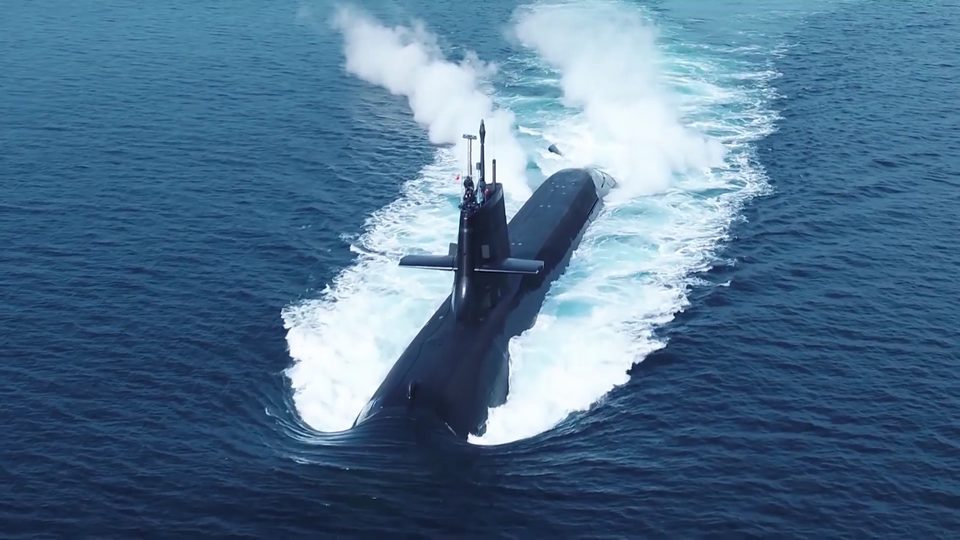
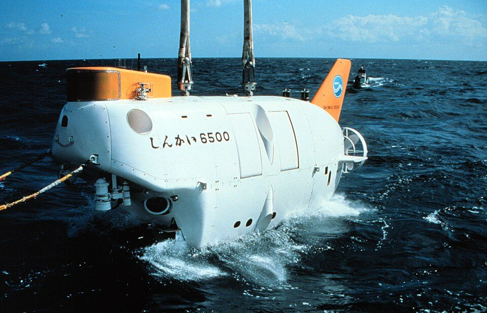

潜水艦はどうやって浮いたり沈んだりする？ 浮力・バラストタンクと、しんかい6500との違い
要点まとめ
海上自衛隊のたいげい型潜水艦は、基準排水量が約3,000トンあります[8]。そんなに重い船が、海の中に潜ったり、また浮かび上がったりできるのはなぜでしょうか。この記事では、浮力と水圧の基本を科学館やJAMSTEC（海洋研究開発機構）の説明で確かめたうえで、潜水艦のタンクの使い方と、深海を調べる有人潜水調査船「しんかい6500」との違いをまとめました。潜水艦のタンクの仕組みは、海上自衛隊・防衛省の公式な説明が見つからなかったため、報道の解説によることを、その都度示しています。

浮く・沈むは「重さ」と「浮力」で決まる
浮力は、押しのけた水の重さ
水中の物は、押しのけた水の重さの分だけ押し上げられる[2]
名古屋市科学館の展示解説によると、物を水に入れると、その物が押しのけた水の体積の分の重さだけ、物を上に押し上げようとする力がはたらきます。これが浮力で、アルキメデスの原理と呼ばれます[2]。JAXAの教材も、浮力の大きさは、水中に入っている部分と同じ体積の水にはたらく重力（重さ）に等しいと説明しています[1]。重い船が海に浮かぶのも、この浮力がはたらくからです[1]。
浮沈子は、重さを変えずに体積を変える
中の空気が縮むと浮力が小さくなり、沈む[2]
水を満たしたペットボトルに、空気の入った小さな容器（浮沈子）を入れてボトルを押すと、その圧力が水のあらゆる方向に伝わり（パスカルの原理）、浮沈子の中の空気が縮みます[2][1]。全体の重さは変わりませんが、押しのける水の体積が減って浮力が小さくなるので沈み、手を離すと元に戻って浮き上がります[2]。JAXAの教材は、浮沈子は下向きの重さと上向きの浮力のバランスを変えて浮き沈みすると説明しています[1]。
海水1m³の重さは、平均で1,027kg
海水は冷たいほど、密度が大きい[9]
東京大学大気海洋研究所の講義資料は、海水の平均の密度を1m³あたり1,027kgとしています[9]。海水は冷たいほど密度が大きく、全海水の平均の塩分は1kgあたり約35gです[9]。海の中の潜水艦にはたらく浮力は、押しのけた海水の重さで決まります[2]。
深く潜るほど大きくなる水圧
水圧は、10m潜るごとに1気圧ずつ増える
水深6,500mでは、1cm²に約650kgの力がかかる[6]
JAMSTECの国際海洋環境情報センター（GODAC）は、水圧は10m潜るごとに1気圧ずつ増え、水深1,000mで約101気圧、水深6,500mでは約651気圧になると説明しています[6]。このとき1cm²に約650kgの力がかかり、GODACは「小指の先にお相撲さん約4人が乗っかるほど」の圧力とたとえています[6]。
| 水深 | 水圧 | その深さの様子 |
|---|---|---|
| 海面 | 約1気圧※ | ― |
| 10m | 約2気圧※ | ― |
| 100m | 約11気圧※ | ― |
| 200m | 約21気圧※ | 太陽の光が海面の0.1%ほどになる。一般に、これより深い海を「深海」と呼ぶ[6] |
| 1,000m | 約101気圧[6] | 水温は2〜4℃[6] |
| 6,500m | 約651気圧（1cm²に約650kg）[6] | 「しんかい6500」の最大潜航深度[6] |
※は、「10mごとに1気圧ずつ増える」[6]をもとに筆者が計算した目安です。実際の水圧は、海水の密度などで少し変わります。潜水艦が潜れる深さは公表されていないため、表には入れていません[7]。
水圧に耐える殻「耐圧殻」
防衛装備庁は、耐圧殻の模型を水圧でつぶす試験をしている[10]
「しんかい6500」では、深海の水圧の中で3人の乗員が安全に調査できるよう、コックピットが「耐圧殻」と呼ぶ球の中にあります[11]。防衛装備庁の艦艇装備研究所は、潜水艦の構造の研究として、耐圧殻の一部をまねた模型を水圧でつぶす試験（圧壊試験）と、その解析を紹介しています[10]。実際の艦と同じように、曲げた板を突き合わせて溶接する造り方では、真円からのわずかなずれ（初期不整）が避けられないため、それを考えに入れて調べているとしています[10]。
潜水艦の潜り方・浮き方
この章の根拠について
潜水艦がタンクをどう使って潜ったり浮いたりするかについて、海上自衛隊・防衛省の公式な説明は、今回見つかりませんでした。この章は、報道の解説（マイナビニュース、2015年5月20日）によるものです[3]。
潜る：上の弁を開くと、下から海水が入る
タンクが海水で満たされると重くなり、潜れる[3]
報道の解説（マイナビニュース、2015年）によると、潜水艦が浮いているとき、メインバラストタンクには空気が入っています。タンクの下は常に開いていますが、上の弁を閉じている間は空気が抜けないので、海水は入ってきません。上の弁を開くと、下から海水が流れ込んで空気を押し出し、タンクが海水で満たされて重くなるので潜航できる、としています[3]。
浮く：高圧の空気で海水を押し出す「ブロー」
押し出した海水の分だけ軽くなり、浮き上がる[3]
同じ解説によると、浮上するときは、ためておいた圧縮空気をメインバラストタンクに送り込み、タンクの中の海水を強制的に押し出します。これを「ブロー」と呼び、その分だけ船が軽くなるので浮上できる、としています[3]。
とどまる：小さなタンクで、前後のつり合いを整える
タンクは複数あり、それぞれ水を出し入れする[3]
同じ解説によると、メインバラストタンクは1つの大きなタンクではなく、複数の区画に分かれています。前後のつり合いをとる小さなタンク（トリムタンク）もあり、タンクごとに注水・排水をして、潜る・浮く速さや前後のバランスを調整する、としています[3]。水中で浮きも沈みもしない状態は、「しんかい6500」の手順にも出てきます（第5章）[5]。
日本の潜水艦の公開情報
| 項目 | たいげい型 | そうりゅう型 |
|---|---|---|
| 基準排水量 | 約3,000t | 約2,950t |
| 長さ・幅・深さ（船体） | 84.0m・9.1m・10.4m | 84.0m・9.1m・10.3m |
| 機関 | ディーゼル電気推進（1軸） | ディーゼル・スターリング、電気推進（1軸） |
| 主要兵装 | 水中発射管 一式 | 水中発射管 一式 |
| 乗員 | 約70名 | 約65名 |
| 速力 | （要目に記載なし） | 約20kt（水上か水中かは書かれていない）[12] |
| 潜航深度 | 非公表[7] | 非公表[7] |
出典: 海上自衛隊 潜水艦隊「装備紹介」[8]、「たいげい」型[13]・「そうりゅう」型[12]のページ。表の「深さ」は船体の寸法で、潜れる深さ（潜航深度）とは別です。kt（ノット）は船の速さの単位です。
どこまで潜れるかは「防衛機密」
2013年の国会で、防衛大臣が詳細は話せないと答弁[7]
2013年4月8日の衆議院予算委員会で、防衛大臣は、潜水艦について「潜航深度を含め、防衛機密に当たって」いるので詳細は話せない、と答弁しています[7]。海上自衛隊の公開要目にも、潜れる深さや、潜っていられる時間は載っていません[8][13]。
そうりゅう型の11番艦から、リチウムイオン電池に
鉛蓄電池とスターリング・エンジンに替えて積む[14]
防衛省の平成27年度（2015年度）予算の概要は、そうりゅう型11番艦（2,900トン）を643億円で建造し、リチウムイオン電池を新たに積んで、これまでのそうりゅう型より水中持続力などを向上させるとしています[15]。2016年3月23日の参議院外交防衛委員会で防衛省は、そうりゅう型はこれまで鉛蓄電池とスターリング・エンジンを積んでいたが、平成27年度以降に建造するものはこれに替えてリチウムイオン電池を積む、と説明しています[14]。
たいげい型は「探知能力等が向上した」新型
2017年度予算の「新型潜水艦」が、のちの「たいげい」[16]
防衛省は平成29年度（2017年度）予算で、「探知能力等が向上した新型潜水艦（3,000トン）」を728億円で建造するとしました[17]。この平成29年度の計画の潜水艦「たいげい」は、2020年10月14日に命名式・進水式が行われたと、同年11月の国会で防衛大臣が述べています[16]。
退役した潜水艦「あきしお」は、中を見学できる
呉史料館（広島県呉市）に、実物が展示されている[18]
海上自衛隊呉史料館は、1986年から2004年まで使われたゆうしお型潜水艦「あきしお」を展示しています。艦長室や士官室などを見学でき、潜水艦の構造を実際に見られると紹介しています[18]。史料館の紹介では、長さ76.2m、基準排水量2,250t、速力20ノット（水中）、船型は「完全複殻式（涙滴型）」です[18]。3階には「潜水艦の機能」「潜水艦の救難」の展示もあります[19]。
「しんかい6500」との違い

しんかい6500は、もともと「浮くように」造られている
そのままでは沈まず、おもりを積んで潜る[4]
JAMSTECは、有人潜水調査船は浮くように造られていて、これが軍用潜水艦と大きく異なる点だと説明しています。「しんかい6500」はそのまま海に入れても絶対に沈まず、おもり（バラスト）を積むことで潜ります[4]。空中重量26.7トンの船体を海中で浮くようにしているのは、中が空洞の小さなガラス球を樹脂で固めた浮力材（シンタクティックフォーム）です[11][4]。
潜る・浮くには、3つの装置を使い分ける
バラストタンク、補助タンク、ウェイト（おもり）[5]
JAMSTECのポスターは、潜航・浮上に重要な装置として、空気と海水を出し入れするバラストタンク、海水を出し入れする補助タンク、鋼鉄板のおもり（ウェイト）を挙げています[5]。1回の潜航の流れは次のとおりです（時刻は水深6,500mまで潜る場合）[5][4]。
- 9:00
バラストタンクに注水して、下降を始める
- 下降中
ウェイトの半分を切り離し、上昇も下降もしていない状態にする
- 11:30
海底に着き、調査を始める
6,500mでは、下降・上昇に5時間、海底での行動に3時間[20]
- 14:30
ウェイトを全部切り離し、上昇を始める
- 17:00
海面に浮上し、バラストタンクに空気を入れる
乗る人は、チタン合金の球の中で大気圧のまま
内径2.0mの球を、真球度1.004の精度で造る[11]
3人が乗るコックピットは、内径2.0mのチタン合金の球（耐圧殻）の中にあります。深海ではわずかなゆがみも許されないため、真球度1.004、外径の誤差±2mm以下の精度で造られています[11]。ハッチを閉めれば、海底まで行っても中は大気圧のままで、乗る人は水圧の影響を受けないとJAMSTECは説明しています[4]。
| 項目 | 潜水艦（たいげい型） | しんかい6500 |
|---|---|---|
| 持ち主 | 海上自衛隊[8] | JAMSTEC[11] |
| 長さ | 84.0m[13] | 9.7m[11] |
| 重さ | 基準排水量 約3,000t[13] | 空中重量 26.7t[11] |
| 乗員 | 約70名[8] | 3名（パイロット2名・研究者1名）[11] |
| もともとの造り | （公式の説明は見つからなかった） | 浮くように造られている[4] |
| 潜り方 | タンクに海水を入れて重くする（報道の解説）[3] | バラストタンクに注水し、おもりを積んで潜る[5][4] |
| 浮き方 | 高圧空気でタンクの海水を押し出す（報道の解説）[3] | ウェイトを全部切り離して浮く[5] |
| 最大の深さ | 非公表（防衛機密）[7] | 6,500m[11] |
| 潜っている時間 | （要目に記載なし） | 通常8時間（ライフサポート時間は129時間）[11] |
基準排水量と空中重量は量り方が違うので、数字をそのまま比べることはできません。
| もの | 浮き沈みのさせ方 |
|---|---|
| 浮沈子 | 重さは変えず、中の空気の体積を変えて浮力を変える[2] |
| 潜水艦（報道の解説） | タンクに海水を出し入れして、重さを変える[3] |
| しんかい6500 | 浮くように造り、注水とおもりで潜り、おもりを捨てて浮く[4][5] |
もしものときの潜水艦救難
潜水艦救難艦は、深海救難艇（DSRV）で乗員を救う
海上自衛隊には「ちよだ」型と「ちはや」型がある[8]
防衛省は、深海救難艇（DSRV）を、海中に潜って、遭難した潜水艦から乗員を救い出すための船と説明しています[21]。海上自衛隊の潜水艦隊は、潜水艦救難艦として「ちよだ」型と「ちはや」型を紹介していて、どちらも深海救難装置一式を備えています[8]。「ちよだ」型は、DSRVを1隻積んでいます[22]。
今回確認できなかった点
- 潜水艦のメインバラストタンク・ブロー・トリムタンクについての、海上自衛隊・防衛省の公式な説明（この記事は報道の解説で書いた）
- 舵を使って深さを変える仕組みの、公的な説明
- 二重殻・単殻など、潜水艦の船体の造りの一般的な説明（呉史料館の「あきしお」の紹介だけ確認できた）
- たいげい型の電池の種類についての、公式な記載
- 浮上できなくなったときの、潜水艦側の対策と、DSRVで乗員を移す具体的な手順の公式な説明
出典（24件）
閲覧日はいずれも2026年11月10日〜11日
- 宇宙の学校テキスト97 浮沈子をつくろう（2023年、PDF）（JAXA 宇宙教育センター）
- 展示解説 S219 たこのダンス（PDF）（名古屋市科学館）
- 軍事とIT 第91回 艦艇のシステム化(6)タンクと電子制御（2015年5月20日）（マイナビニュース（TECH+））
- 「しんかい6500」特集ページ システム（JAMSTEC（海洋研究開発機構））
- ポスター「しんかい6500」海底調査の1日（PDF）（JAMSTEC（海洋研究開発機構））
- 深海とは（JAMSTEC 国際海洋環境情報センター（GODAC））
- 第183回国会 衆議院 予算委員会 第20号（2013年4月8日）（国立国会図書館 国会会議録検索システム）
- 装備紹介（海上自衛隊 潜水艦隊）
- 流体地球科学 第2回（講義資料、2019年、PDF）（東京大学 大気海洋研究所）
- 潜水艦構造様式の研究（技術シンポジウム2023 ポスター、PDF）（防衛装備庁 艦艇装備研究所）
- 有人潜水調査船「しんかい6500」（JAMSTEC（海洋研究開発機構））
- 潜水艦「そうりゅう」型（海上自衛隊）
- 潜水艦「たいげい」型（海上自衛隊）
- 第190回国会 参議院 外交防衛委員会 第7号（2016年3月23日）（国立国会図書館 国会会議録検索システム）
- 我が国の防衛と予算 平成27年度予算の概要（PDF。国立国会図書館 WARP に保存されたもの）（防衛省）
- 第203回国会 衆議院 安全保障委員会 第3号（2020年11月19日）（国立国会図書館 国会会議録検索システム）
- 我が国の防衛と予算 平成29年度予算の概要（PDF。国立国会図書館 WARP に保存されたもの）（防衛省）
- 3階・潜水艦あきしお体験（海上自衛隊呉史料館）
- 3階・潜水艦の活躍（海上自衛隊呉史料館）
- 有人潜水調査船「しんかい6500」利用の手引き（2026年6月改訂、PDF）（JAMSTEC 研究プラットフォーム運用部門）
- 我が国の防衛と予算 平成26年度予算の概要（PDF。国立国会図書館 WARP に保存されたもの）（防衛省）
- 潜水艦救難艦「ちよだ」型（海上自衛隊）
- 潜水艦救難艦「ちはや」型（海上自衛隊）
- 令和8年版 防衛白書 資料編（PDF）（防衛省）
写真・画像の出典（2件）
- 浮上するそうりゅう型潜水艦（海上自衛隊）
写真: 防衛省／Wikimedia Commons（CC BY 4.0） - 有人潜水調査船「しんかい6500」
写真: 米国海洋大気庁（NOAA）／Wikimedia Commons（パブリックドメイン）